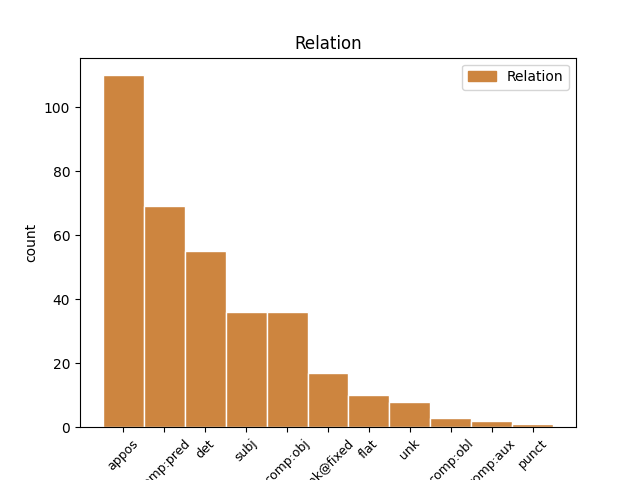
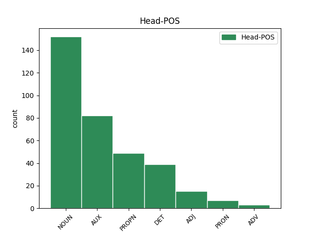
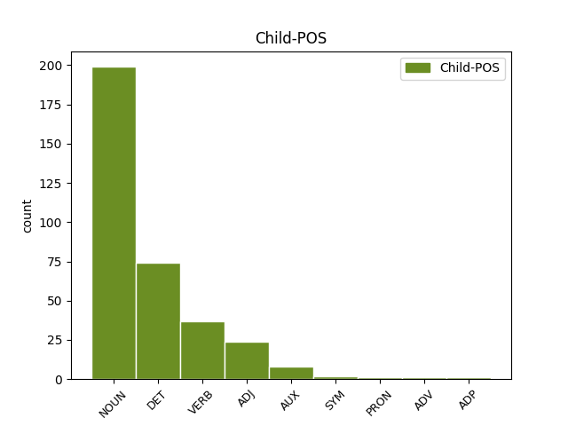

Distribution of features within this leaf



Agreement Rules sorted by frequency.
- When the dependent token is the appositional modifier(appos) of the head token, and the head token is NOUN and the dependent token is NOUN.
1 Nafarroako _ _ _ _ 0 _ _ _
2 Gobernuak _ _ _ _ 0 _ _ _
3 1.115 _ _ _ _ 0 _ _ _
4 milioi _ _ _ _ 0 _ _ _
5 pezeta pezeta NOUN _ Animacy=Inan|Case=Abs|Definite=Ind 0 _ _ _
6 jaso _ _ _ _ 0 _ _ _
7 ditu _ _ _ _ 0 _ _ _
8 Espainiako _ _ _ _ 0 _ _ _
9 Nekazaritza _ _ _ _ 0 _ _ _
10 Ministeriotik _ _ _ _ 0 _ _ _
11 herrialdeko _ _ _ _ 0 _ _ _
12 mahastiak _ _ _ _ 0 _ _ _
13 berregituratzeko _ _ _ _ 0 _ _ _
14 ( _ _ _ _ 0 _ _ _
15 44,6 _ _ _ _ 0 _ _ _
16 milioi _ _ _ _ 0 _ _ _
17 libera libera NOUN _ Animacy=Inan|Case=Abs|Definite=Ind 5 appos _ SpaceAfter=No
18 ) _ _ _ _ 0 _ _ _
19 . _ _ _ _ 0 _ _ _
1 Asegarce-Altiren _ _ _ _ 0 _ _ _
2 adarreko _ _ _ _ 0 _ _ _
3 finala _ _ _ _ 0 _ _ _
4 jokatuko _ _ _ _ 0 _ _ _
5 dute _ _ _ _ 0 _ _ _
6 Jorge _ _ _ _ 0 _ _ _
7 Nagorek Nagore PROPN _ Case=Erg|Definite=Def|Number=Sing 0 _ _ _
8 Nafarroako _ _ _ _ 0 _ _ _
9 egungo _ _ _ _ 0 _ _ _
10 txapeldunak txapeldun NOUN _ Animacy=Anim|Case=Erg|Definite=Def|Number=Sing 7 appos _ _
11 eta _ _ _ _ 0 _ _ _
12 Ruben _ _ _ _ 0 _ _ _
13 Belokik _ _ _ _ 0 _ _ _
14 ( _ _ _ _ 0 _ _ _
15 17:45 _ _ _ _ 0 _ _ _
16 , _ _ _ _ 0 _ _ _
17 Tele _ _ _ _ 0 _ _ _
18 5 _ _ _ _ 0 _ _ _
19 ) _ _ _ _ 0 _ _ _
20 . _ _ _ _ 0 _ _ _
1 Olinpiar _ _ _ _ 0 _ _ _
2 leloak _ _ _ _ 0 _ _ _
3 bultzatuta _ _ _ _ 0 _ _ _
4 , _ _ _ _ 0 _ _ _
5 mugak _ _ _ _ 0 _ _ _
6 gainditzea gainditu VERB _ Case=Abs 9 comp:pred _ _
7 izan _ _ _ _ 0 _ _ _
8 dute _ _ _ _ 0 _ _ _
9 xede xede NOUN _ Animacy=Inan|Case=Abs|Definite=Ind 0 _ _ _
10 , _ _ _ _ 0 _ _ _
11 bakoitzak _ _ _ _ 0 _ _ _
12 bere _ _ _ _ 0 _ _ _
13 mailan _ _ _ _ 0 _ _ _
14 . _ _ _ _ 0 _ _ _
1 Hau hau DET _ Case=Abs|Definite=Def|Number=Sing 0 _ _ _
2 guztia guzti DET _ Case=Abs|Definite=Def|Number=Sing 1 det _ _
3 denen _ _ _ _ 0 _ _ _
4 jakinetara _ _ _ _ 0 _ _ _
5 jartzen _ _ _ _ 0 _ _ _
6 da _ _ _ _ 0 _ _ _
7 . _ _ _ _ 0 _ _ _
1 Taldeak _ _ _ _ 0 _ _ _
2 " _ _ _ _ 0 _ _ _
3 kalitateko _ _ _ _ 0 _ _ _
4 atezaina atezain NOUN _ Animacy=Anim|Case=Abs|Definite=Def|Number=Sing 5 comp:obj _ _
5 behar behar NOUN _ Animacy=Inan|Case=Abs|Definite=Ind 0 _ _ _
6 " _ _ _ _ 0 _ _ _
7 duela _ _ _ _ 0 _ _ _
8 gaineratu _ _ _ _ 0 _ _ _
9 zuen _ _ _ _ 0 _ _ _
10 , _ _ _ _ 0 _ _ _
11 eta _ _ _ _ 0 _ _ _
12 , _ _ _ _ 0 _ _ _
13 ziurrenik _ _ _ _ 0 _ _ _
14 , _ _ _ _ 0 _ _ _
15 " _ _ _ _ 0 _ _ _
16 etxetik _ _ _ _ 0 _ _ _
17 kanpo _ _ _ _ 0 _ _ _
18 " _ _ _ _ 0 _ _ _
19 bilatuko _ _ _ _ 0 _ _ _
20 dutela _ _ _ _ 0 _ _ _
21 . _ _ _ _ 0 _ _ _
1 Franko franko DET _ Case=Abs|Definite=Ind 2 det _ _
2 jende jende NOUN _ Case=Abs|Definite=Ind 0 _ _ _
3 zebilen _ _ _ _ 0 _ _ _
4 harat-hunat _ _ _ _ 0 _ _ _
5 mota _ _ _ _ 0 _ _ _
6 guztitako _ _ _ _ 0 _ _ _
7 makina _ _ _ _ 0 _ _ _
8 eta _ _ _ _ 0 _ _ _
9 tramankulu _ _ _ _ 0 _ _ _
10 haien _ _ _ _ 0 _ _ _
11 aurrean _ _ _ _ 0 _ _ _
12 : _ _ _ _ 0 _ _ _
1 " _ _ _ _ 0 _ _ _
2 Desmilitarizazio _ _ _ _ 0 _ _ _
3 prozesuan _ _ _ _ 0 _ _ _
4 lehen _ _ _ _ 0 _ _ _
5 urratsa _ _ _ _ 0 _ _ _
6 izatea _ _ _ _ 0 _ _ _
7 espero _ _ _ _ 0 _ _ _
8 dugu _ _ _ _ 0 _ _ _
9 , _ _ _ _ 0 _ _ _
10 eta _ _ _ _ 0 _ _ _
11 prozesua prozesu NOUN _ Animacy=Inan|Case=Abs|Definite=Def|Number=Sing 13 subj _ _
12 azkarra _ _ _ _ 0 _ _ _
13 izatea izan AUX _ Case=Abs 0 _ _ _
14 ere _ _ _ _ 0 _ _ _
15 bai _ _ _ _ 0 _ _ _
16 " _ _ _ _ 0 _ _ _
17 . _ _ _ _ 0 _ _ _
1 Gogorra _ _ _ _ 0 _ _ _
2 da _ _ _ _ 0 _ _ _
3 estaturik _ _ _ _ 0 _ _ _
4 gabeko _ _ _ _ 0 _ _ _
5 herrialdea herrialde NOUN _ Case=Abs|Definite=Def|Number=Sing 6 comp:pred _ _
6 izatea izan AUX _ Case=Abs 0 _ _ _
7 . _ _ _ _ 0 _ _ _
1 Proposamen _ _ _ _ 0 _ _ _
2 hauek _ _ _ _ 0 _ _ _
3 oinarrituta _ _ _ _ 0 _ _ _
4 daude _ _ _ _ 0 _ _ _
5 , _ _ _ _ 0 _ _ _
6 besteak beste DET _ Case=Abs|Definite=Def|Number=Plur 0 _ _ _
7 beste beste DET _ Case=Abs|Definite=Ind 6 unk@fixed _ SpaceAfter=No
8 , _ _ _ _ 0 _ _ _
9 euskaldunok _ _ _ _ 0 _ _ _
10 egiten _ _ _ _ 0 _ _ _
11 ditugun _ _ _ _ 0 _ _ _
12 errore _ _ _ _ 0 _ _ _
13 tipikoen _ _ _ _ 0 _ _ _
14 azterketa _ _ _ _ 0 _ _ _
15 batean _ _ _ _ 0 _ _ _
16 . _ _ _ _ 0 _ _ _
1 Hala _ _ _ _ 0 _ _ _
2 , _ _ _ _ 0 _ _ _
3 hurrengo _ _ _ _ 0 _ _ _
4 Jokoetan _ _ _ _ 0 _ _ _
5 Sydneyn _ _ _ _ 0 _ _ _
6 bezain _ _ _ _ 0 _ _ _
7 eskuzabal eskuzabal ADJ _ Case=Abs|Definite=Ind 0 _ _ _
8 inbertsio _ _ _ _ 0 _ _ _
9 handiak _ _ _ _ 0 _ _ _
10 egiteko _ _ _ _ 0 _ _ _
11 modua modu NOUN _ Animacy=Inan|Case=Abs|Definite=Def|Number=Sing 7 comp:obj _ _
12 izango _ _ _ _ 0 _ _ _
13 du _ _ _ _ 0 _ _ _
14 Nikek _ _ _ _ 0 _ _ _
15 , _ _ _ _ 0 _ _ _
16 eta _ _ _ _ 0 _ _ _
17 atleta _ _ _ _ 0 _ _ _
18 onenei _ _ _ _ 0 _ _ _
19 eskaintzarik _ _ _ _ 0 _ _ _
20 eskuzabalenak _ _ _ _ 0 _ _ _
21 egingo _ _ _ _ 0 _ _ _
22 dizkie _ _ _ _ 0 _ _ _
23 . _ _ _ _ 0 _ _ _
1 Horrela _ _ _ _ 0 _ _ _
2 , _ _ _ _ 0 _ _ _
3 bada _ _ _ _ 0 _ _ _
4 , _ _ _ _ 0 _ _ _
5 patriarkatuak _ _ _ _ 0 _ _ _
6 gizonen _ _ _ _ 0 _ _ _
7 arteko _ _ _ _ 0 _ _ _
8 dependentzia _ _ _ _ 0 _ _ _
9 eta _ _ _ _ 0 _ _ _
10 elkartasunezko _ _ _ _ 0 _ _ _
11 lokarriak lokarri NOUN _ Animacy=Inan|Case=Abs|Definite=Def|Number=Plur 0 _ _ _
12 eratzen _ _ _ _ 0 _ _ _
13 ditu _ _ _ _ 0 _ _ _
14 , _ _ _ _ 0 _ _ _
15 emakumeak _ _ _ _ 0 _ _ _
16 menderatzeko _ _ _ _ 0 _ _ _
17 bidea _ _ _ _ 0 _ _ _
18 ematen _ _ _ _ 0 _ _ _
19 dienak *edun AUX _ Case=Abs|Definite=Def|Mood=Ind|Number=Plur|Number[abs]=Sing|Number[dat]=Plur|Number[erg]=Sing|Person[abs]=3|Person[dat]=3|Person[erg]=3 11 appos _ SpaceAfter=No
20 . _ _ _ _ 0 _ _ _
1 Izan _ _ _ _ 0 _ _ _
2 ere _ _ _ _ 0 _ _ _
3 , _ _ _ _ 0 _ _ _
4 zerbait zerbait PRON _ Case=Abs|Definite=Ind 0 _ _ _
5 gehiago gehiago DET _ Case=Abs|Definite=Ind 4 det _ _
6 behar _ _ _ _ 0 _ _ _
7 da _ _ _ _ 0 _ _ _
8 nirekin _ _ _ _ 0 _ _ _
9 bukatzeko _ _ _ _ 0 _ _ _
10 . _ _ _ _ 0 _ _ _
1 Harry _ _ _ _ 0 _ _ _
2 bedeinkatua _ _ _ _ 0 _ _ _
3 lana _ _ _ _ 0 _ _ _
4 , _ _ _ _ 0 _ _ _
5 berriz _ _ _ _ 0 _ _ _
6 , _ _ _ _ 0 _ _ _
7 eleberria _ _ _ _ 0 _ _ _
8 oinarri _ _ _ _ 0 _ _ _
9 hartu _ _ _ _ 0 _ _ _
10 eta _ _ _ _ 0 _ _ _
11 Careyk Carey PROPN _ Case=Erg|Definite=Def|Number=Sing 0 _ _ _
12 berak bera DET _ Case=Erg|Definite=Def|Number=Sing 11 det _ _
13 gidoia _ _ _ _ 0 _ _ _
14 moldatuta _ _ _ _ 0 _ _ _
15 , _ _ _ _ 0 _ _ _
16 Ray _ _ _ _ 0 _ _ _
17 Lawrenceren _ _ _ _ 0 _ _ _
18 zuzendaritzapean _ _ _ _ 0 _ _ _
19 zinemara _ _ _ _ 0 _ _ _
20 eraman _ _ _ _ 0 _ _ _
21 zen _ _ _ _ 0 _ _ _
22 . _ _ _ _ 0 _ _ _
1 Azkarrago _ _ _ _ 0 _ _ _
2 , _ _ _ _ 0 _ _ _
3 altuago _ _ _ _ 0 _ _ _
4 , _ _ _ _ 0 _ _ _
5 indartsuago _ _ _ _ 0 _ _ _
6 Marion _ _ _ _ 0 _ _ _
7 Jones _ _ _ _ 0 _ _ _
8 atleta _ _ _ _ 0 _ _ _
9 izan _ _ _ _ 0 _ _ _
10 da _ _ _ _ 0 _ _ _
11 Sydneyko _ _ _ _ 0 _ _ _
12 Olinpiar _ _ _ _ 0 _ _ _
13 Jokoetako _ _ _ _ 0 _ _ _
14 izarra _ _ _ _ 0 _ _ _
15 , _ _ _ _ 0 _ _ _
16 bost _ _ _ _ 0 _ _ _
17 urre _ _ _ _ 0 _ _ _
18 lortzea lortu VERB _ Case=Abs 19 comp:pred _ _
19 ezinezkoa ezinezko ADJ _ Case=Abs|Definite=Def|Number=Sing 0 _ _ _
20 izan _ _ _ _ 0 _ _ _
21 duen _ _ _ _ 0 _ _ _
22 arren _ _ _ _ 0 _ _ _
23 . _ _ _ _ 0 _ _ _
1 Aldai _ _ _ _ 0 _ _ _
2 izeneko _ _ _ _ 0 _ _ _
3 transformazio-zentroari transformazio+-+zentro NOUN _ Animacy=Inan|Case=Dat|Definite=Def|Number=Sing 0 _ _ _
4 , _ _ _ _ 0 _ _ _
5 egitura _ _ _ _ 0 _ _ _
6 trinkodun _ _ _ _ 0 _ _ _
7 prefabrikatuari prefabrikatu VERB _ Case=Dat|Definite=Def|Number=Sing|VerbForm=Part 3 appos _ _
8 ( _ _ _ _ 0 _ _ _
9 13,2 _ _ _ _ 0 _ _ _
10 kv _ _ _ _ 0 _ _ _
11 ) _ _ _ _ 0 _ _ _
12 Administrazioaren _ _ _ _ 0 _ _ _
13 baimena _ _ _ _ 0 _ _ _
14 ematea _ _ _ _ 0 _ _ _
15 eta _ _ _ _ 0 _ _ _
16 egiteko _ _ _ _ 0 _ _ _
17 proiektua _ _ _ _ 0 _ _ _
18 onartzea _ _ _ _ 0 _ _ _
19 . _ _ _ _ 0 _ _ _
1 Annikari Annika PROPN _ Case=Dat|Definite=Def|Number=Sing 0 _ _ _
2 berari bera DET _ Case=Dat|Definite=Def|Number=Sing 1 appos _ SpaceAfter=No
3 , _ _ _ _ 0 _ _ _
4 XVIII. _ _ _ _ 0 _ _ _
5 mendean _ _ _ _ 0 _ _ _
6 bizi _ _ _ _ 0 _ _ _
7 izan _ _ _ _ 0 _ _ _
8 balitz _ _ _ _ 0 _ _ _
9 , _ _ _ _ 0 _ _ _
10 gauza _ _ _ _ 0 _ _ _
11 bera _ _ _ _ 0 _ _ _
12 gertatuko _ _ _ _ 0 _ _ _
13 zitzaion _ _ _ _ 0 _ _ _
14 . _ _ _ _ 0 _ _ _
1 Eta _ _ _ _ 0 _ _ _
2 gazte _ _ _ _ 0 _ _ _
3 horien _ _ _ _ 0 _ _ _
4 ilusioaren _ _ _ _ 0 _ _ _
5 adinakoa _ _ _ _ 0 _ _ _
6 da _ _ _ _ 0 _ _ _
7 Al _ _ _ _ 0 _ _ _
8 Goreren _ _ _ _ 0 _ _ _
9 aholkularien _ _ _ _ 0 _ _ _
10 kezka _ _ _ _ 0 _ _ _
11 , _ _ _ _ 0 _ _ _
12 bi _ _ _ _ 0 _ _ _
13 aldeak alde NOUN _ Animacy=Inan|Case=Abs|Definite=Def|Number=Plur 0 _ _ _
14 ( _ _ _ _ 0 _ _ _
15 zentro _ _ _ _ 0 _ _ _
16 eskuina eskuin ADJ _ Case=Abs|Definite=Def|Number=Sing 13 appos _ _
17 eta _ _ _ _ 0 _ _ _
18 aurrerazaleak _ _ _ _ 0 _ _ _
19 ) _ _ _ _ 0 _ _ _
20 aseko _ _ _ _ 0 _ _ _
21 dituen _ _ _ _ 0 _ _ _
22 mezua _ _ _ _ 0 _ _ _
23 topatu _ _ _ _ 0 _ _ _
24 ezinik _ _ _ _ 0 _ _ _
25 . _ _ _ _ 0 _ _ _
1 " _ _ _ _ 0 _ _ _
2 Desmilitarizazio _ _ _ _ 0 _ _ _
3 prozesuan _ _ _ _ 0 _ _ _
4 lehen _ _ _ _ 0 _ _ _
5 urratsa _ _ _ _ 0 _ _ _
6 izatea _ _ _ _ 0 _ _ _
7 espero _ _ _ _ 0 _ _ _
8 dugu _ _ _ _ 0 _ _ _
9 , _ _ _ _ 0 _ _ _
10 eta _ _ _ _ 0 _ _ _
11 prozesua _ _ _ _ 0 _ _ _
12 azkarra azkar ADJ _ Case=Abs|Definite=Def|Number=Sing 13 comp:pred _ _
13 izatea izan AUX _ Case=Abs 0 _ _ _
14 ere _ _ _ _ 0 _ _ _
15 bai _ _ _ _ 0 _ _ _
16 " _ _ _ _ 0 _ _ _
17 . _ _ _ _ 0 _ _ _
1 Aireratu _ _ _ _ 0 _ _ _
2 eta _ _ _ _ 0 _ _ _
3 handik _ _ _ _ 0 _ _ _
4 denbora _ _ _ _ 0 _ _ _
5 laburrera _ _ _ _ 0 _ _ _
6 irrati _ _ _ _ 0 _ _ _
7 bidezko _ _ _ _ 0 _ _ _
8 kontaktua _ _ _ _ 0 _ _ _
9 galdu _ _ _ _ 0 _ _ _
10 zuen _ _ _ _ 0 _ _ _
11 kontroleko _ _ _ _ 0 _ _ _
12 arduradunekin _ _ _ _ 0 _ _ _
13 , _ _ _ _ 0 _ _ _
14 atzo _ _ _ _ 0 _ _ _
15 funtzionarioek funtzionario NOUN _ Animacy=Inan|Case=Erg|Definite=Def|Number=Plur 0 _ _ _
16 berek berak DET _ Case=Erg|Definite=Def|Number=Plur 15 appos _ _
17 jakitera _ _ _ _ 0 _ _ _
18 eman _ _ _ _ 0 _ _ _
19 zutenez _ _ _ _ 0 _ _ _
20 . _ _ _ _ 0 _ _ _
1 Hala _ _ _ _ 0 _ _ _
2 ondorioztatu _ _ _ _ 0 _ _ _
3 zuen _ _ _ _ 0 _ _ _
4 atzo _ _ _ _ 0 _ _ _
5 Eduardo _ _ _ _ 0 _ _ _
6 Stein _ _ _ _ 0 _ _ _
7 Guatemalako _ _ _ _ 0 _ _ _
8 Atzerri _ _ _ _ 0 _ _ _
9 ministro _ _ _ _ 0 _ _ _
10 ohi _ _ _ _ 0 _ _ _
11 eta _ _ _ _ 0 _ _ _
12 OEA _ _ _ _ 0 _ _ _
13 Amerikako _ _ _ _ 0 _ _ _
14 Estatuen estatu NOUN _ Case=Gen|Definite=Def|Number=Plur 0 _ _ _
15 Erakundearen erakunde NOUN _ Animacy=Inan|Case=Gen|Definite=Def|Number=Sing 14 flat _ _
16 Peruko _ _ _ _ 0 _ _ _
17 bozetarako _ _ _ _ 0 _ _ _
18 misioko _ _ _ _ 0 _ _ _
19 buruzagiak _ _ _ _ 0 _ _ _
20 . _ _ _ _ 0 _ _ _
1 Horregatik _ _ _ _ 0 _ _ _
2 Bozak _ _ _ _ 0 _ _ _
3 deitu _ _ _ _ 0 _ _ _
4 beharko _ _ _ _ 0 _ _ _
5 lituzkete _ _ _ _ 0 _ _ _
6 egun _ _ _ _ 0 _ _ _
7 berean _ _ _ _ 0 _ _ _
8 , _ _ _ _ 0 _ _ _
9 Serbiako _ _ _ _ 0 _ _ _
10 beste _ _ _ _ 0 _ _ _
11 lurraldeek _ _ _ _ 0 _ _ _
12 bezala _ _ _ _ 0 _ _ _
13 , _ _ _ _ 0 _ _ _
14 eta _ _ _ _ 0 _ _ _
15 hori hori DET _ Case=Abs|Definite=Def|Number=Sing 27 subj _ _
16 da _ _ _ _ 0 _ _ _
17 , _ _ _ _ 0 _ _ _
18 hain _ _ _ _ 0 _ _ _
19 zuzen _ _ _ _ 0 _ _ _
20 , _ _ _ _ 0 _ _ _
21 bertako _ _ _ _ 0 _ _ _
22 agintariek _ _ _ _ 0 _ _ _
23 Nazio _ _ _ _ 0 _ _ _
24 Batuen _ _ _ _ 0 _ _ _
25 Erakundeari _ _ _ _ 0 _ _ _
26 eskatu _ _ _ _ 0 _ _ _
27 diotena *edun AUX _ Case=Abs|Definite=Def|Mood=Ind|Number=Sing|Number[abs]=Sing|Number[dat]=Sing|Number[erg]=Plur|Person[abs]=3|Person[dat]=3|Person[erg]=3 0 _ _ _
28 . _ _ _ _ 0 _ _ _
1 1962an _ _ _ _ 0 _ _ _
2 Charles _ _ _ _ 0 _ _ _
3 De _ _ _ _ 0 _ _ _
4 Gaulle _ _ _ _ 0 _ _ _
5 eta _ _ _ _ 0 _ _ _
6 Konrad _ _ _ _ 0 _ _ _
7 Adenauer _ _ _ _ 0 _ _ _
8 Bonnen _ _ _ _ 0 _ _ _
9 elkartu _ _ _ _ 0 _ _ _
10 zirenean _ _ _ _ 0 _ _ _
11 55 _ _ _ _ 0 _ _ _
12 miloi _ _ _ _ 0 _ _ _
13 lagun lagun NOUN _ Animacy=Anim|Case=Abs|Definite=Ind 0 _ _ _
14 bizi _ _ _ _ 0 _ _ _
15 ziren _ _ _ _ 0 _ _ _
16 herrialde _ _ _ _ 0 _ _ _
17 horretan _ _ _ _ 0 _ _ _
18 , _ _ _ _ 0 _ _ _
19 eta _ _ _ _ 0 _ _ _
20 47 _ _ _ _ 0 _ _ _
21 milioi milioi NOUN _ Case=Abs|Definite=Ind 13 det _ _
22 Frantzian _ _ _ _ 0 _ _ _
23 . _ _ _ _ 0 _ _ _
1 Gainera _ _ _ _ 0 _ _ _
2 , _ _ _ _ 0 _ _ _
3 ez _ _ _ _ 0 _ _ _
4 zen _ _ _ _ 0 _ _ _
5 nire _ _ _ _ 0 _ _ _
6 gustuko _ _ _ _ 0 _ _ _
7 ibilbidea _ _ _ _ 0 _ _ _
8 , _ _ _ _ 0 _ _ _
9 bihurgune _ _ _ _ 0 _ _ _
10 gehiegi _ _ _ _ 0 _ _ _
11 zituen _ _ _ _ 0 _ _ _
12 , _ _ _ _ 0 _ _ _
13 eta _ _ _ _ 0 _ _ _
14 hori hori DET _ Case=Abs|Definite=Def|Number=Sing 17 comp:obj _ _
15 ez _ _ _ _ 0 _ _ _
16 dut _ _ _ _ 0 _ _ _
17 atsegin atsegin ADJ _ Case=Abs|Definite=Ind 0 _ _ _
18 . _ _ _ _ 0 _ _ _
1 Atzealdeko _ _ _ _ 0 _ _ _
2 lanaren _ _ _ _ 0 _ _ _
3 sendotasunean _ _ _ _ 0 _ _ _
4 oinarrituta _ _ _ _ 0 _ _ _
5 geratu _ _ _ _ 0 _ _ _
6 zen _ _ _ _ 0 _ _ _
7 Alaves Alaves PROPN _ Case=Abs|Definite=Def|Number=Sing 0 _ _ _
8 Txapeldunen _ _ _ _ 0 _ _ _
9 Liga liga NOUN _ Case=Abs|Definite=Def|Number=Sing 7 unk _ _
10 jokatzeko _ _ _ _ 0 _ _ _
11 zorian _ _ _ _ 0 _ _ _
12 . _ _ _ _ 0 _ _ _
1 Garraiolarien _ _ _ _ 0 _ _ _
2 greba greba NOUN _ Case=Abs|Definite=Def|Number=Sing 0 _ _ _
3 ia _ _ _ _ 0 _ _ _
4 erabatekoa erabateko ADJ _ Case=Abs|Definite=Def|Number=Sing 2 comp:pred _ _
5 izan _ _ _ _ 0 _ _ _
6 da _ _ _ _ 0 _ _ _
7 Hego _ _ _ _ 0 _ _ _
8 Euskal _ _ _ _ 0 _ _ _
9 Herrian _ _ _ _ 0 _ _ _
10 . _ _ _ _ 0 _ _ _
1 Konposatuak _ _ _ _ 0 _ _ _
2 , _ _ _ _ 0 _ _ _
3 prozedura _ _ _ _ 0 _ _ _
4 kimikoak _ _ _ _ 0 _ _ _
5 erabiliz _ _ _ _ 0 _ _ _
6 beste _ _ _ _ 0 _ _ _
7 sinpleago _ _ _ _ 0 _ _ _
8 batzuetan _ _ _ _ 0 _ _ _
9 bana _ _ _ _ 0 _ _ _
10 daitezkeen _ _ _ _ 0 _ _ _
11 substantzia _ _ _ _ 0 _ _ _
12 puruak _ _ _ _ 0 _ _ _
13 dira _ _ _ _ 0 _ _ _
14 , _ _ _ _ 0 _ _ _
15 eta _ _ _ _ 0 _ _ _
16 bakunak _ _ _ _ 0 _ _ _
17 , _ _ _ _ 0 _ _ _
18 berriz _ _ _ _ 0 _ _ _
19 , _ _ _ _ 0 _ _ _
20 metodo _ _ _ _ 0 _ _ _
21 kimikoak _ _ _ _ 0 _ _ _
22 erabiliz _ _ _ _ 0 _ _ _
23 ere _ _ _ _ 0 _ _ _
24 sinpleagoetan _ _ _ _ 0 _ _ _
25 bana _ _ _ _ 0 _ _ _
26 ezin ezin NOUN _ Animacy=Inan|Case=Abs|Definite=Ind 27 comp:aux _ _
27 daitezkeenak *edin AUX _ Case=Abs|Definite=Def|Mood=Pot|Number=Plur|Number[abs]=Plur|Person[abs]=3 0 _ _ _
28 . _ _ _ _ 0 _ _ _
1 Aita aita NOUN _ Case=Abs|Definite=Def|Number=Sing 2 comp:obj _ _
2 Urrestillakoa Urrestilla PROPN _ Case=Abs|Definite=Def|Number=Sing 0 _ _ _
3 dut _ _ _ _ 0 _ _ _
4 . _ _ _ _ 0 _ _ _
1 ( _ _ _ _ 0 _ _ _
2 Euskaraz _ _ _ _ 0 _ _ _
3 da _ _ _ _ 0 _ _ _
4 Laxalten _ _ _ _ 0 _ _ _
5 " _ _ _ _ 0 _ _ _
6 A _ _ _ _ 0 _ _ _
7 Cup _ _ _ _ 0 _ _ _
8 ot _ _ _ _ 0 _ _ _
9 Tea _ _ _ _ 0 _ _ _
10 in _ _ _ _ 0 _ _ _
11 Pamplona _ _ _ _ 0 _ _ _
12 " _ _ _ _ 0 _ _ _
13 , _ _ _ _ 0 _ _ _
14 edo _ _ _ _ 0 _ _ _
15 ' _ _ _ _ 0 _ _ _
16 Kafea kafe NOUN _ Case=Abs|Definite=Def|Number=Sing 0 _ _ _
17 hartzea hartu VERB _ Case=Abs 16 flat _ _
18 Iruñean _ _ _ _ 0 _ _ _
19 ' _ _ _ _ 0 _ _ _
20 ere _ _ _ _ 0 _ _ _
21 ( _ _ _ _ 0 _ _ _
22 Elkar _ _ _ _ 0 _ _ _
23 , _ _ _ _ 0 _ _ _
24 1986 _ _ _ _ 0 _ _ _
25 ) _ _ _ _ 0 _ _ _
26 , _ _ _ _ 0 _ _ _
27 itzultzaile _ _ _ _ 0 _ _ _
28 beraren _ _ _ _ 0 _ _ _
29 lumatik _ _ _ _ 0 _ _ _
30 ) _ _ _ _ 0 _ _ _
31 . _ _ _ _ 0 _ _ _
1 Bigarrenean _ _ _ _ 0 _ _ _
2 Lapazaranek _ _ _ _ 0 _ _ _
3 , _ _ _ _ 0 _ _ _
4 eguneko _ _ _ _ 0 _ _ _
5 saio _ _ _ _ 0 _ _ _
6 onena _ _ _ _ 0 _ _ _
7 eginik _ _ _ _ 0 _ _ _
8 , _ _ _ _ 0 _ _ _
9 aise _ _ _ _ 0 _ _ _
10 lortu _ _ _ _ 0 _ _ _
11 zuen _ _ _ _ 0 _ _ _
12 finalerako _ _ _ _ 0 _ _ _
13 txartela txartel NOUN _ Animacy=Inan|Case=Abs|Definite=Def|Number=Sing 0 _ _ _
14 ( _ _ _ _ 0 _ _ _
15 1.349,5 _ _ _ _ 0 _ _ _
16 kg kg SYM _ Case=Abs|Definite=Def|Number=Sing 13 appos _ SpaceAfter=No
17 . _ _ _ _ 0 _ _ _
1 Gainera _ _ _ _ 0 _ _ _
2 , _ _ _ _ 0 _ _ _
3 2.000. _ _ _ _ 0 _ _ _
4 urtean _ _ _ _ 0 _ _ _
5 sartu _ _ _ _ 0 _ _ _
6 diren _ _ _ _ 0 _ _ _
7 diru _ _ _ _ 0 _ _ _
8 partidak _ _ _ _ 0 _ _ _
9 - _ _ _ _ 0 _ _ _
10 dela _ _ _ _ 0 _ _ _
11 Europatik _ _ _ _ 0 _ _ _
12 lortutakoak lortu VERB _ Case=Abs|Definite=Def|Number=Plur|VerbForm=Part 18 punct _ SpaceAfter=No
13 , _ _ _ _ 0 _ _ _
14 Diputazioen _ _ _ _ 0 _ _ _
15 apartazioak _ _ _ _ 0 _ _ _
16 edo _ _ _ _ 0 _ _ _
17 tesoreriako _ _ _ _ 0 _ _ _
18 soberakinak soberakin NOUN _ Case=Abs|Definite=Def|Number=Plur 0 _ _ _
19 - _ _ _ _ 0 _ _ _
20 datorren _ _ _ _ 0 _ _ _
21 urteko _ _ _ _ 0 _ _ _
22 aurrekontuari _ _ _ _ 0 _ _ _
23 gehituko _ _ _ _ 0 _ _ _
24 zaio _ _ _ _ 0 _ _ _
25 . _ _ _ _ 0 _ _ _
1 Azken _ _ _ _ 0 _ _ _
2 atal _ _ _ _ 0 _ _ _
3 honetan _ _ _ _ 0 _ _ _
4 , _ _ _ _ 0 _ _ _
5 zuzendaritza _ _ _ _ 0 _ _ _
6 karguak _ _ _ _ 0 _ _ _
7 berriztatzeko _ _ _ _ 0 _ _ _
8 prozesua _ _ _ _ 0 _ _ _
9 azpimarratu _ _ _ _ 0 _ _ _
10 du _ _ _ _ 0 _ _ _
11 , _ _ _ _ 0 _ _ _
12 kongresuko _ _ _ _ 0 _ _ _
13 berrikuntza _ _ _ _ 0 _ _ _
14 nabarmenetako _ _ _ _ 0 _ _ _
15 bat _ _ _ _ 0 _ _ _
16 emakumezkoak emakumezko NOUN _ Case=Abs|Definite=Def|Number=Plur 22 comp:obj _ _
17 nahiz _ _ _ _ 0 _ _ _
18 gazteak _ _ _ _ 0 _ _ _
19 sindikatuko _ _ _ _ 0 _ _ _
20 goreneko _ _ _ _ 0 _ _ _
21 egituretan _ _ _ _ 0 _ _ _
22 sartzea sartu AUX _ Case=Abs 0 _ _ _
23 izango _ _ _ _ 0 _ _ _
24 baita _ _ _ _ 0 _ _ _
25 . _ _ _ _ 0 _ _ _
1 Olaizolaren _ _ _ _ 0 _ _ _
2 ostiralekoa _ _ _ _ 0 _ _ _
3 , _ _ _ _ 0 _ _ _
4 berriz _ _ _ _ 0 _ _ _
5 , _ _ _ _ 0 _ _ _
6 garaipen _ _ _ _ 0 _ _ _
7 bat _ _ _ _ 0 _ _ _
8 baino _ _ _ _ 0 _ _ _
9 zerbait zerbait PRON _ Case=Abs|Definite=Ind 10 det _ _
10 gehiago gehiago DET _ Case=Abs|Definite=Ind 0 _ _ _
11 ere _ _ _ _ 0 _ _ _
12 izan _ _ _ _ 0 _ _ _
13 zen _ _ _ _ 0 _ _ _
14 : _ _ _ _ 0 _ _ _
1 Hamar _ _ _ _ 0 _ _ _
2 minutu _ _ _ _ 0 _ _ _
3 edo _ _ _ _ 0 _ _ _
4 ordu-laurden _ _ _ _ 0 _ _ _
5 bat _ _ _ _ 0 _ _ _
6 bakarrik _ _ _ _ 0 _ _ _
7 dauka _ _ _ _ 0 _ _ _
8 gurekin _ _ _ _ 0 _ _ _
9 egoteko _ _ _ _ 0 _ _ _
10 , _ _ _ _ 0 _ _ _
11 ez _ _ _ _ 0 _ _ _
12 bada _ _ _ _ 0 _ _ _
13 gauza _ _ _ _ 0 _ _ _
14 arraroren _ _ _ _ 0 _ _ _
15 bat _ _ _ _ 0 _ _ _
16 gertatzen _ _ _ _ 0 _ _ _
17 edo _ _ _ _ 0 _ _ _
18 medikua mediku NOUN _ Animacy=Anim|Case=Abs|Definite=Def|Number=Sing 0 _ _ _
19 bera bera ADJ _ Case=Abs|Definite=Def|Number=Sing 18 det _ _
20 nahiko _ _ _ _ 0 _ _ _
21 berezia _ _ _ _ 0 _ _ _
22 ez _ _ _ _ 0 _ _ _
23 bada _ _ _ _ 0 _ _ _
24 . _ _ _ _ 0 _ _ _
1 Abertzaletasun _ _ _ _ 0 _ _ _
2 horrek _ _ _ _ 0 _ _ _
3 , _ _ _ _ 0 _ _ _
4 bestalde _ _ _ _ 0 _ _ _
5 , _ _ _ _ 0 _ _ _
6 eta _ _ _ _ 0 _ _ _
7 industrializazioak _ _ _ _ 0 _ _ _
8 erakarritako _ _ _ _ 0 _ _ _
9 inmigrante _ _ _ _ 0 _ _ _
10 multzo _ _ _ _ 0 _ _ _
11 ikaragarriaren _ _ _ _ 0 _ _ _
12 eraginez _ _ _ _ 0 _ _ _
13 , _ _ _ _ 0 _ _ _
14 kutsu _ _ _ _ 0 _ _ _
15 xenofobo _ _ _ _ 0 _ _ _
16 nabarmena _ _ _ _ 0 _ _ _
17 hartu _ _ _ _ 0 _ _ _
18 zuen _ _ _ _ 0 _ _ _
19 gerraosteko _ _ _ _ 0 _ _ _
20 urte _ _ _ _ 0 _ _ _
21 haietan _ _ _ _ 0 _ _ _
22 eta _ _ _ _ 0 _ _ _
23 honen hau DET _ Case=Gen|Definite=Def|Number=Sing 24 comp:aux _ _
24 guztionen guzti DET _ Case=Gen|Definite=Def|Number=Sing 0 _ _ _
25 oihartzuna _ _ _ _ 0 _ _ _
26 bete-betekoa _ _ _ _ 0 _ _ _
27 izan _ _ _ _ 0 _ _ _
28 zen _ _ _ _ 0 _ _ _
29 hizkuntzaren _ _ _ _ 0 _ _ _
30 esparruan _ _ _ _ 0 _ _ _
31 ere _ _ _ _ 0 _ _ _
32 . _ _ _ _ 0 _ _ _
1 Jauregiren _ _ _ _ 0 _ _ _
2 irudiko _ _ _ _ 0 _ _ _
3 , _ _ _ _ 0 _ _ _
4 " _ _ _ _ 0 _ _ _
5 legegintzaldi _ _ _ _ 0 _ _ _
6 honetan _ _ _ _ 0 _ _ _
7 ez _ _ _ _ 0 _ _ _
8 dago _ _ _ _ 0 _ _ _
9 EAJrekin _ _ _ _ 0 _ _ _
10 elkar _ _ _ _ 0 _ _ _
11 ulertzeko _ _ _ _ 0 _ _ _
12 aukerarik _ _ _ _ 0 _ _ _
13 , _ _ _ _ 0 _ _ _
14 baina _ _ _ _ 0 _ _ _
15 hauteskundeen _ _ _ _ 0 _ _ _
16 ostean _ _ _ _ 0 _ _ _
17 guztia guzti DET _ Case=Abs|Definite=Def|Number=Sing 19 subj _ _
18 da _ _ _ _ 0 _ _ _
19 posible posible ADJ _ Case=Abs|Definite=Ind 0 _ _ _
20 " _ _ _ _ 0 _ _ _
21 . _ _ _ _ 0 _ _ _
1 Grenoblen _ _ _ _ 0 _ _ _
2 Romain _ _ _ _ 0 _ _ _
3 Carryk Carry PROPN _ Case=Erg|Definite=Def|Number=Sing 0 _ _ _
4 hainbat _ _ _ _ 0 _ _ _
5 minutu _ _ _ _ 0 _ _ _
6 jokatu _ _ _ _ 0 _ _ _
7 zuen _ _ _ _ 0 _ _ _
8 , _ _ _ _ 0 _ _ _
9 Hormadiko _ _ _ _ 0 _ _ _
10 ohiak ohi ADJ _ Case=Erg|Definite=Def|Number=Sing 3 appos _ SpaceAfter=No
11 . _ _ _ _ 0 _ _ _
1 Sumindurarekin _ _ _ _ 0 _ _ _
2 batera _ _ _ _ 0 _ _ _
3 , _ _ _ _ 0 _ _ _
4 ordea _ _ _ _ 0 _ _ _
5 , _ _ _ _ 0 _ _ _
6 ihes _ _ _ _ 0 _ _ _
7 egiteko _ _ _ _ 0 _ _ _
8 premia _ _ _ _ 0 _ _ _
9 bortitz _ _ _ _ 0 _ _ _
10 bat _ _ _ _ 0 _ _ _
11 sortu _ _ _ _ 0 _ _ _
12 zitzaion _ _ _ _ 0 _ _ _
13 , _ _ _ _ 0 _ _ _
14 buruan _ _ _ _ 0 _ _ _
15 zerabiltzanak erabili VERB _ Aspect=Prog|Case=Abs|Definite=Def|Mood=Ind|Number=Plur|Number[abs]=Plur|Number[erg]=Sing|Person[abs]=3|Person[erg]=3 17 subj _ _
16 isilarazi _ _ _ _ 0 _ _ _
17 zizkiona *edun AUX _ Case=Abs|Definite=Def|Mood=Ind|Number=Sing|Number[abs]=Plur|Number[dat]=Sing|Number[erg]=Sing|Person[abs]=3|Person[dat]=3|Person[erg]=3 0 _ _ _
18 . _ _ _ _ 0 _ _ _
1 Litekeena _ _ _ _ 0 _ _ _
2 de _ _ _ _ 0 _ _ _
3 Finidi _ _ _ _ 0 _ _ _
4 nigeriarra nigeriar ADJ _ Case=Abs|Definite=Def|Number=Sing 6 subj _ _
5 titular _ _ _ _ 0 _ _ _
6 izatea izan AUX _ Case=Abs 0 _ _ _
7 gaur _ _ _ _ 0 _ _ _
8 San _ _ _ _ 0 _ _ _
9 Mamesen _ _ _ _ 0 _ _ _
10 . _ _ _ _ 0 _ _ _
1 Epaiketak _ _ _ _ 0 _ _ _
2 egin _ _ _ _ 0 _ _ _
3 arte _ _ _ _ 0 _ _ _
4 oso _ _ _ _ 0 _ _ _
5 denbora _ _ _ _ 0 _ _ _
6 luzea _ _ _ _ 0 _ _ _
7 pasatzen _ _ _ _ 0 _ _ _
8 da _ _ _ _ 0 _ _ _
9 eta _ _ _ _ 0 _ _ _
10 horrela _ _ _ _ 0 _ _ _
11 ustelkeria _ _ _ _ 0 _ _ _
12 kasuengatik _ _ _ _ 0 _ _ _
13 kartzelan _ _ _ _ 0 _ _ _
14 dauden _ _ _ _ 0 _ _ _
15 asko asko DET _ Case=Abs|Definite=Ind 0 _ _ _
16 , _ _ _ _ 0 _ _ _
17 horrekin _ _ _ _ 0 _ _ _
18 zerikusia _ _ _ _ 0 _ _ _
19 duten _ _ _ _ 0 _ _ _
20 politikariak politikari NOUN _ Animacy=Anim|Case=Abs|Definite=Def|Number=Plur 15 comp:pred _ SpaceAfter=No
21 , _ _ _ _ 0 _ _ _
22 esaterako _ _ _ _ 0 _ _ _
23 , _ _ _ _ 0 _ _ _
24 libre _ _ _ _ 0 _ _ _
25 irten _ _ _ _ 0 _ _ _
26 daitezke _ _ _ _ 0 _ _ _
27 delituak _ _ _ _ 0 _ _ _
28 preskribitu _ _ _ _ 0 _ _ _
29 duelako _ _ _ _ 0 _ _ _
30 . _ _ _ _ 0 _ _ _
1 ARMENIAKO _ _ _ _ 0 _ _ _
2 herritarren _ _ _ _ 0 _ _ _
3 eskubideak _ _ _ _ 0 _ _ _
4 mundu _ _ _ _ 0 _ _ _
5 zabalean _ _ _ _ 0 _ _ _
6 onartuak onartu VERB _ Case=Abs|Definite=Def|Number=Plur|VerbForm=Part 7 comp:pred _ _
7 izateko izan AUX _ Case=Abs|Definite=Ind 0 _ _ _
8 lanean _ _ _ _ 0 _ _ _
9 ari _ _ _ _ 0 _ _ _
10 da _ _ _ _ 0 _ _ _
11 CDCA _ _ _ _ 0 _ _ _
12 Armeniar _ _ _ _ 0 _ _ _
13 Kausaren _ _ _ _ 0 _ _ _
14 Defentsarako _ _ _ _ 0 _ _ _
15 Komitea _ _ _ _ 0 _ _ _
16 . _ _ _ _ 0 _ _ _
1 Krutxagaren _ _ _ _ 0 _ _ _
2 esanetan _ _ _ _ 0 _ _ _
3 , _ _ _ _ 0 _ _ _
4 harmailak _ _ _ _ 0 _ _ _
5 beteta _ _ _ _ 0 _ _ _
6 ikusi _ _ _ _ 0 _ _ _
7 ostean _ _ _ _ 0 _ _ _
8 " _ _ _ _ 0 _ _ _
9 oso _ _ _ _ 0 _ _ _
10 gogo _ _ _ _ 0 _ _ _
11 biziz _ _ _ _ 0 _ _ _
12 " _ _ _ _ 0 _ _ _
13 zelairatuko _ _ _ _ 0 _ _ _
14 da _ _ _ _ 0 _ _ _
15 talde _ _ _ _ 0 _ _ _
16 gorritxoa _ _ _ _ 0 _ _ _
17 , _ _ _ _ 0 _ _ _
18 eta _ _ _ _ 0 _ _ _
19 Real _ _ _ _ 0 _ _ _
20 Madrilek _ _ _ _ 0 _ _ _
21 zaila zail ADJ _ Case=Abs|Definite=Def|Number=Sing 0 _ _ _
22 izango _ _ _ _ 0 _ _ _
23 du _ _ _ _ 0 _ _ _
24 ezer _ _ _ _ 0 _ _ _
25 lortzea lortu VERB _ Case=Abs 21 comp:obj _ SpaceAfter=No
26 . _ _ _ _ 0 _ _ _
1 Michael _ _ _ _ 0 _ _ _
2 Zijlaard _ _ _ _ 0 _ _ _
3 entrenatzaileak _ _ _ _ 0 _ _ _
4 ( _ _ _ _ 0 _ _ _
5 senarra _ _ _ _ 0 _ _ _
6 gaur _ _ _ _ 0 _ _ _
7 egun _ _ _ _ 0 _ _ _
8 ) _ _ _ _ 0 _ _ _
9 , _ _ _ _ 0 _ _ _
10 ordea _ _ _ _ 0 _ _ _
11 , _ _ _ _ 0 _ _ _
12 txirrindularitza _ _ _ _ 0 _ _ _
13 baino _ _ _ _ 0 _ _ _
14 gauza _ _ _ _ 0 _ _ _
15 garrantzitsuagoak _ _ _ _ 0 _ _ _
16 badirela _ _ _ _ 0 _ _ _
17 esan _ _ _ _ 0 _ _ _
18 zion _ _ _ _ 0 _ _ _
19 , _ _ _ _ 0 _ _ _
20 eta _ _ _ _ 0 _ _ _
21 geroztik _ _ _ _ 0 _ _ _
22 garaipenen _ _ _ _ 0 _ _ _
23 sekretua sekretu NOUN _ Animacy=Inan|Case=Abs|Definite=Def|Number=Sing 24 comp:obj _ _
24 hori hori DET _ Case=Abs|Definite=Def|Number=Sing 0 _ _ _
25 duela _ _ _ _ 0 _ _ _
26 dio _ _ _ _ 0 _ _ _
27 . _ _ _ _ 0 _ _ _
1 Atzerrian _ _ _ _ 0 _ _ _
2 egindako _ _ _ _ 0 _ _ _
3 ikasketei _ _ _ _ 0 _ _ _
4 buruz _ _ _ _ 0 _ _ _
5 , _ _ _ _ 0 _ _ _
6 berriz _ _ _ _ 0 _ _ _
7 , _ _ _ _ 0 _ _ _
8 deus deus PRON _ Case=Abs|Definite=Ind 0 _ _ _
9 gutxi gutxi DET _ Case=Abs|Definite=Ind 8 unk _ _
10 azaldu _ _ _ _ 0 _ _ _
11 zigun _ _ _ _ 0 _ _ _
12 . _ _ _ _ 0 _ _ _
1 " _ _ _ _ 0 _ _ _
2 Errepresioa _ _ _ _ 0 _ _ _
3 ez _ _ _ _ 0 _ _ _
4 da _ _ _ _ 0 _ _ _
5 bidea _ _ _ _ 0 _ _ _
6 , _ _ _ _ 0 _ _ _
7 gatazka _ _ _ _ 0 _ _ _
8 gainditzeko _ _ _ _ 0 _ _ _
9 bidea _ _ _ _ 0 _ _ _
10 Euskal _ _ _ _ 0 _ _ _
11 Herriak _ _ _ _ 0 _ _ _
12 erabakitzen _ _ _ _ 0 _ _ _
13 duena *edun AUX _ Case=Abs|Definite=Def|Mood=Ind|Number=Sing|Number[abs]=Sing|Number[erg]=Sing|Person[abs]=3|Person[erg]=3 14 comp:obj _ _
14 onartzea onartu AUX _ Case=Abs 0 _ _ _
15 da _ _ _ _ 0 _ _ _
16 " _ _ _ _ 0 _ _ _
17 . _ _ _ _ 0 _ _ _
1 Seigarren _ _ _ _ 0 _ _ _
2 postu _ _ _ _ 0 _ _ _
3 hau _ _ _ _ 0 _ _ _
4 Abel _ _ _ _ 0 _ _ _
5 Antoni Anton PROPN _ Case=Dat|Definite=Def|Number=Sing 0 _ _ _
6 eskaini _ _ _ _ 0 _ _ _
7 nahi _ _ _ _ 0 _ _ _
8 diot _ _ _ _ 0 _ _ _
9 , _ _ _ _ 0 _ _ _
10 azken _ _ _ _ 0 _ _ _
11 urte _ _ _ _ 0 _ _ _
12 hauetan _ _ _ _ 0 _ _ _
13 munduko _ _ _ _ 0 _ _ _
14 maratoilaririk _ _ _ _ 0 _ _ _
15 onena _ _ _ _ 0 _ _ _
16 izan _ _ _ _ 0 _ _ _
17 denari izan AUX _ Case=Dat|Definite=Def|Mood=Ind|Number=Sing|Number[abs]=Sing|Person[abs]=3 5 appos _ SpaceAfter=No
18 . _ _ _ _ 0 _ _ _
Disagree Examples:
1 Hizkuntza-heldutasuna _ _ _ _ 0 _ _ _
2 neurtzeko _ _ _ _ 0 _ _ _
3 era _ _ _ _ 0 _ _ _
4 hau _ _ _ _ 0 _ _ _
5 Brown _ _ _ _ 0 _ _ _
6 ( _ _ _ _ 0 _ _ _
7 1976 _ _ _ _ 0 _ _ _
8 ) _ _ _ _ 0 _ _ _
9 ikerlariak _ _ _ _ 0 _ _ _
10 asmatu _ _ _ _ 0 _ _ _
11 zuen _ _ _ _ 0 _ _ _
12 haurren _ _ _ _ 0 _ _ _
13 hizkuntza-maila _ _ _ _ 0 _ _ _
14 mugatzeko _ _ _ _ 0 _ _ _
15 helburuagaz _ _ _ _ 0 _ _ _
16 , _ _ _ _ 0 _ _ _
17 eta _ _ _ _ 0 _ _ _
18 euskararentzat _ _ _ _ 0 _ _ _
19 Idizabalek Idizabal PROPN _ Case=Erg|Definite=Def|Number=Sing 0 _ _ _
20 ( _ _ _ _ 0 _ _ _
21 1991a 1991a NOUN _ Case=Abs|Definite=Ind 19 appos _ SpaceAfter=No
22 ) _ _ _ _ 0 _ _ _
23 egokitu _ _ _ _ 0 _ _ _
24 du _ _ _ _ 0 _ _ _
25 . _ _ _ _ 0 _ _ _
1 Titular titular NOUN _ Case=Abs|Definite=Ind 2 comp:pred _ _
2 izateko izan AUX _ Case=Loc 0 _ _ _
3 aukerak _ _ _ _ 0 _ _ _
4 ditu _ _ _ _ 0 _ _ _
5 . _ _ _ _ 0 _ _ _
1 CD-ROMetan _ _ _ _ 0 _ _ _
2 informazio _ _ _ _ 0 _ _ _
3 gehiegi _ _ _ _ 0 _ _ _
4 atzigarri atzi+!garri ADJ _ Case=Abs|Definite=Ind 5 comp:pred _ _
5 dagoenez egon AUX _ Aspect=Prog|Case=Ins|Definite=Def|Mood=Ind|Number=Plur|Number[abs]=Sing|Person[abs]=3 0 _ _ _
6 ikasleak _ _ _ _ 0 _ _ _
7 galduta _ _ _ _ 0 _ _ _
8 aurki _ _ _ _ 0 _ _ _
9 lezake _ _ _ _ 0 _ _ _
10 bere _ _ _ _ 0 _ _ _
11 burua _ _ _ _ 0 _ _ _
12 . _ _ _ _ 0 _ _ _
1 Lehen _ _ _ _ 0 _ _ _
2 eta _ _ _ _ 0 _ _ _
3 bigarren _ _ _ _ 0 _ _ _
4 plantiletan _ _ _ _ 0 _ _ _
5 fitxarik _ _ _ _ 0 _ _ _
6 ez _ _ _ _ 0 _ _ _
7 zen _ _ _ _ 0 _ _ _
8 libre _ _ _ _ 0 _ _ _
9 , _ _ _ _ 0 _ _ _
10 eta _ _ _ _ 0 _ _ _
11 zaila _ _ _ _ 0 _ _ _
12 zirudien _ _ _ _ 0 _ _ _
13 hogei _ _ _ _ 0 _ _ _
14 urtez _ _ _ _ 0 _ _ _
15 azpikoen _ _ _ _ 0 _ _ _
16 mundialean _ _ _ _ 0 _ _ _
17 txapeldun txapeldun NOUN _ Animacy=Anim|Case=Abs|Definite=Ind 18 comp:pred _ _
18 izandako izan AUX _ Case=Loc|VerbForm=Part 0 _ _ _
19 gizon _ _ _ _ 0 _ _ _
20 honen _ _ _ _ 0 _ _ _
21 egoerak _ _ _ _ 0 _ _ _
22 . _ _ _ _ 0 _ _ _
1 Bigarren _ _ _ _ 0 _ _ _
2 Mailan _ _ _ _ 0 _ _ _
3 Sadarren _ _ _ _ 0 _ _ _
4 eginiko _ _ _ _ 0 _ _ _
5 azken _ _ _ _ 0 _ _ _
6 entrenamendua _ _ _ _ 0 _ _ _
7 eta _ _ _ _ 0 _ _ _
8 partidutxoa _ _ _ _ 0 _ _ _
9 izan _ _ _ _ 0 _ _ _
10 daiteke _ _ _ _ 0 _ _ _
11 atzo _ _ _ _ 0 _ _ _
12 Lotinaren _ _ _ _ 0 _ _ _
13 mutilek mutil NOUN _ Animacy=Anim|Case=Erg|Definite=Def|Number=Plur 15 subj _ _
14 egin _ _ _ _ 0 _ _ _
15 zutena *edun AUX _ Case=Abs|Definite=Def|Mood=Ind|Number=Sing|Number[abs]=Sing|Number[erg]=Plur|Person[abs]=3|Person[erg]=3 0 _ _ _
16 . _ _ _ _ 0 _ _ _